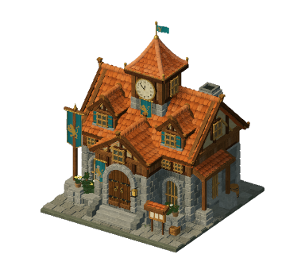
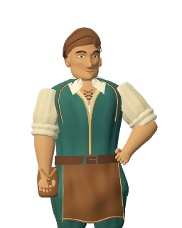

THE FREE GAME VERSÃO DE TESTES
The Free
Game
Você planeja a vila.
Seus moradores dão vida a ela.
Preparando o jogo…
O primeiro carregamento pode levar um pouco mais de tempo.
Não foi possível abrir a vila
Confira sua conexão e tente novamente.
Detalhes do erro
Seu primeiro caminho: ligue a praça à escola com uma estrada.

